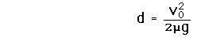

Stopping Distance for Auto
Assuming proper operation of the brakes, the minimum stopping distance for an automobile is determined by the effective coefficient of friction between the tires and the road. The friction force of the road must do enough work on the car to reduce its kinetic energy to zero (work-energy principle). If the wheels of the car continue to turn while braking, then static friction is operating, while if the wheels are locked and sliding over the road surface, the braking force is a kinetic friction force.To reduce the kinetic energy to zero:
so the stopping distance is
|  | Show calculation |
 | Even though the stopping distance for a large truck should be the same as that for a car, there are real-world cases where a truck has more difficulty stopping. Runaway truck ramps are placed on long downgrades like this one on Monteagle in Tennessee. Deep, loose gravel provides a stopping force greater than that obtained from just a tire against the road. |
Work-energy principle
| HyperPhysics***** Mechanics | R Nave |